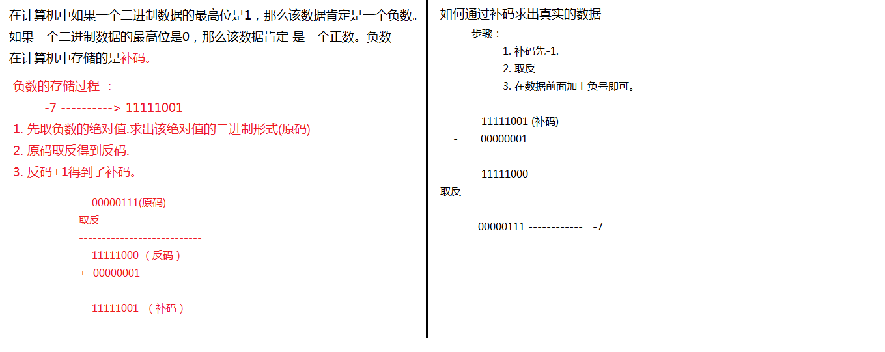
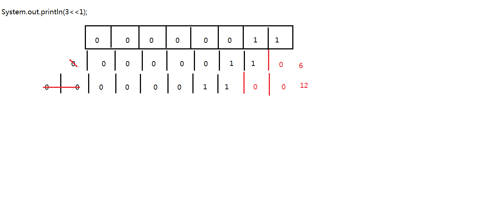
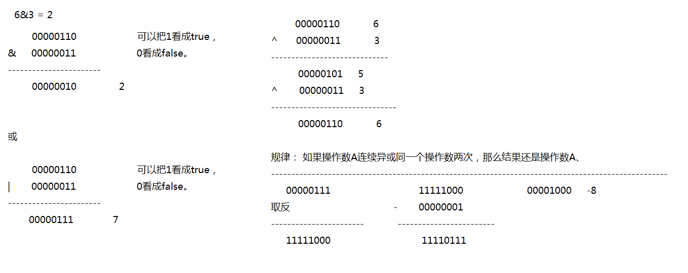

数据类型转换：
小数据类型-------->大数据类型 自动类型转换
大数据类型--------->小数据类型 强制类型转换
强制类型转换的格式：
小数据类型 变量名 = (小数据类型)大数据类型
数据类型转换要注意的细节：
1. 凡是byte、short 、 char数据类型数据在运算的时候都会自动转换成int类型的数据再运算。
2. 两个不同数据类型的数据在运算的时候，结果取决于大的数据类型。
运算符：
算术运算符:
+ (正数、加法、连接符)
连接符的作用： 让任何的数据都可以与字符串进行拼接。
如果+号用于字符串的时候，那么+号就是一个连接符，并不是 做加法功能了。
连接符要注意：任何类型的数据与字符串使用连接符连接，那么结果都是字符串类型的数据。
-
*
/ (除法)
%(取模、取余数)
自增减
++ （自增） : 自增就是相当于操作数+1.
前自增：++位于操作数的前面。 比如： ++a；
前自增：先自增，后使用。
---------------------------------------------- ----------------------------------------------
后自增： 先使用，后自增。
----------------------------------------------------------------------------------------------------------------------------------------------------------------------------------------
自减： 操作数-1.
前自减: --位于操作数的前面。 --操作数
前自减： 先自减，后使用。
----------------------------------------------
后自减：--位于操作数的后面。 操作数--；
后自减： 先使用，后自减。
后自增在jvm的运行原理：
因为后自增要使用 到没有+1之前 的值，那么jvm会先声明一个变量用于保存没有+1之前的值。
举例子：
1. int temp = i; // 声明了一个临时变量用于记录了i没有加1之前的值。
2. 自增。 i = i+1; i = 1;
3. temp把用作了表达式 的结果。
i的值发生了几次变化：
i = 0 -----> 1----> 0
赋值运算符：
= (赋值运算符)
+=
-=
*=
/=
%=
比较运算符：
比较运算符的结果都是返回一个布尔值的。
== (判断是否等于)
==用于比较两个基本数据类型数据的时候，比较的是两个变量所存储的值是否一致.
==用于比较两个引用类型变量的数据时候，比较的是两个 引用类型变量所记录的内存地址是否一致.
!= (不等于)
> (大于)
< (小于)
>= (大于等于)
<= (小于等于)
逻辑运算符 ：
逻辑运算符的作用是用于连接布尔表达式的。
& （与,并且）
规律： 只有左右变量同时 为true，那么结果才是true，否则就为false。
| (或,或者)
规律： 只要两边的布尔表达式有一边为true，那么结果就为true，只有两边同时为false 的时候，结果才是false.
^ (异或)
规律： 只要两边的布尔表达式 结果不一致，那么结果就为true，如果左右两边 的布尔表达式一致，那么就为false.
！ (非)
--------------------
&& (短路与\双与)
短路与和单与符号的相同与不同点：
相同点： 短路与和单与运算 的结果是一样的。
不同点： 使用短路与的时候，如果左边的布尔表达式为false，则不会在运算右边的布尔表达式，从而提高了
效率。使用单与的时候，即使发现左边的布尔表达式为false，还是会运算右边的布尔表达式的。
只有左边的布尔表达式为false时，双与的效率才要高于单与的.
|| (短路或\双或)
短路或与单或的相同点与不同点：
相同点：运算的结果是一致 的。
不同点：使用短路或的时候，当发现左边的布尔表达式为true时，则不会运算右边的布尔表达式。
使用单或的时候 发现左边的布尔表达式为true，还是会运算右边布尔表达式。
位运算符：
位运算符就是直接操作二进制位的。
& (与)
| (或)
^ (异或)
~ (取反)
规律： 如果操作数A连续异或同一个操作数两次，那么结果还是操作数A。
应用： 对数据加密.
移位运算符：
<<(左移)
规律：一个操作数进行左移运算的时候，结果就是等于操作数乘以2的n次方，n就是左移 的位数.
3<<1 = 3 *2(1) = 6;
3<<2 = 3*2(2) = 12
3<<3 = 3*2(3) = 24
>>(右移)
规律：一个操作数在做右移运算的时候，实际上就是等于该操作数除以2的n次方，n就是右移的位数。
3>>1 = 3 / 2(1) = 1
3>>2 = 3 / 2(2) = 0 。。
>>>(无符号右移) ：
无符号右移与右移的区别：进行右移运算的时候，如果操作数是一个正数，那么左边的空缺位使用0补，
如果操作数是一个负数，那么左边的空缺位使用1补。而使用无符号右移的时候，不管是正数还是负数都
统一使用0补。
笔试题目：使用最高的效率算出2乘以8的结果。
2<<3 = 2*2(3) = 16;
三元运算符(三目运算符)
格式;
布尔表达式？值1:值2 ;
三元运算符要注意的细节：
使用三元运算符的时候，一定要使用该表达式返回的结果，或者是定义一个变量接收该表达式返回的结果。
负数的储存原理图

左移原理图
位运算符
